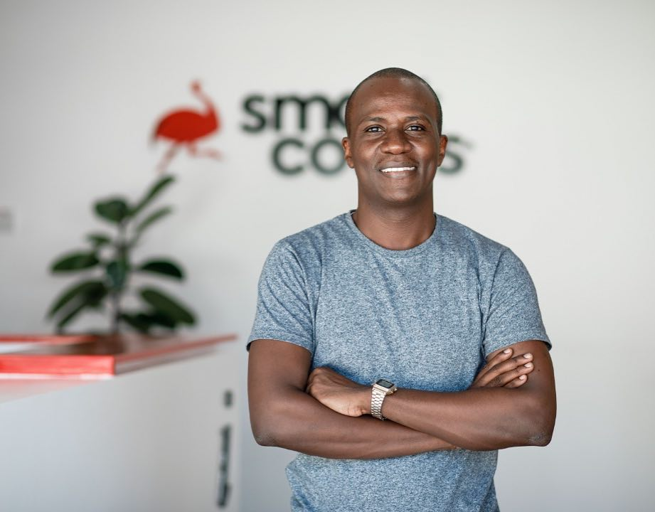

Meet Isaya Yunge – CEO SomaApps Technologies
Isaya Yunge is an unshakable optimist, futurist, and visionary thinker with a rare intellect. With a passion for entrepreneurship and technology, Isaya is an enthusiast who turns ideas into reality, and is a tireless advocate for youth involvement in creating innovative solutions that impact people’s lives.
Isaya is the founder and chief executive of Somaapps Technologies which created SomaApp, a mobile app which is revolutionising how scholarships are offered in Africa.
Isaya and his team came up with the idea after seeing how many domestic and international scholarships go unclaimed each year because young people are simply unaware of them. Isaya is trained at by the Swedish Institute on Sustainable Business models and he currently studies Leading Change at Cambridge university. He uses mobile software to address the needs of African communities.
Yunge had a difficult childhood. His parents never married so he was born and raised an outcast. He was raised by his grandmother and spent his childhood herding goats, cows and chasing birds on rice plantations.
Peaceful as he was, he says he was always rejected, whether by his step-mother or step-father. It made his upbringing unstable and unpredictable. He had to live from one foster family to another. He was forced to live by himself from the second year of secondary school. He worked after school to earn money for food and rent.
In 2014, he became curious about the tech industry, particularly the app business.
That year, he attended a talk about the fourth industrial revolution, the sharing economy and collaborative commons, by Jeremy Rifkin, an American economist. It was affirmation he would one day solve Africa’s problems through digital technology.
Today, SomaApps is a scholarship-matching app that lists and matches students with thousands of domestic and international scholarships. His aim is to accelerate the advent of mobile software technologies, artificial intelligence and the Internet of Things in Tanzania. He employs 12 people.
Along his journey, he has collected a number of accolades. In 2006, he was elected to become the chairperson of the Junior Council of the United Republic of Tanzania, spoke at the G8 Summit at the age of 17, won the GSMA Mobile Money Africa Hackathon as best startup in Africa in 2017, won the prestigious Queens Young Leaders Award and won at the Start-up Turkey Award as one of the top three startups in the world.
Isaya Yunge was recognized by Forbes Africa 30 Under 30 as a promising change-maker in the continent and received “The Queens Young Leaders Award 2018” from Her Majesty Queen Elizabeth II, for his work using technology to impact communities and lives with sustainable solutions.
As an alumni of the Harvard Ministerial Leadership Program, Isaya is passionate about advocating for a tech startup friendly environment, with the goal of inspiring innovation and African technological advancement.
He was named amongst the 50 Most Influential Young Tanzania’s in 2019 and he spoke at the G8 Summit in Berlin Germany at the age of 17, after being selected as the UNICEF Africa Youth Ambassador at the G8 2007.
Godfrey Calvin Magila | C.E.O & Founder of Magila tech.
Godfrey Calvin Magila is an optimist and idealist with passion, talent, amazement, and sometimes skepticism, for technology. He believes in the power of knowledge and collaboration and is actively working towards an ecosystem that enables more technology opportunities in and for Africa. At 23, he has already been recognized for his experience as a software developer. Founder/CEO of Magilatech Co Limited and a Microsoft TOT for the 4Africa Initiative specializing in mobile app development in Africa, Godfrey is also a country expert for World Summit Awards (WSA) in Tanzania.
Godfrey’s focus as a technologist has been on cyber security and increasing inclusion and participation using Technology. Among the products he has developed through Magilatech are Tigo Backup, an app that allows users to back up their mobile data to the cloud and secure their data and device in case of theft, a biometric system enabling people with disabilities to participate in elections, and Mobile Parliament, a system that allows citizens to participate in parliamentary debates in real-time via mobile phone. His company also conducts security audits services for Government and Private Institutions.
Godfrey got his first taste of being a tech entrepreneur during his first year of university when he won the first Tanzania Hackathon Programming Challenge. With the help of Dar Teknohama Business Incubator (DTBi), he then set up Magilatech. He is now being supported by Dar Teknohama Business Incubator and the Demeter Entrepreneurs Support Network, a global network for entrepreneurs based in the US. Magilatech works closely with major telecom companies in Africa and Asia on moble applications and VAS services. Products and services they support have millions of users.
Godfrey and Magilatech have since won a number of accolades; Godfrey received a fellowship from the United Nation’s International Telecommunication Union (ITU) for His Mobile Parliament Service and has been a key representative for Tanzania Young Tech Entrepreneurs at ITU for the past two Years. Magilatech was a finalist in Startup World Africa and mentioned as an Upcoming Startup Company to Watch in Forbes Afrique

Edwin Bruno
Founder: Smart Codes.
Shayo first got his first taste of entrepreneurship at the age of 13, selling cassettes. At 17, he graduated to selling CDs. With a government allowance for university, he bought his first computer and a modem. With the only $10 left in his pocket, he printed business cards.
He built websites for companies to advertise their products. Clients trickled in. He named the business Smart Codes, a digital agency that focuses on advertising, research and marketing. One of its most successful products is M-Paper, a platform that distributes printed newspapers and books directly to readers’ phones. M-Paper won the AppsAfrica award for the best innovation and educational application in Africa. Shayo also won a Hall Of Fame Tanzania leadership award and Young Achiever of the Year in the Tanzania Leadership Awards in 2015. Smart Codes turns over $350,000 a year and has 29 full-time employees and 15 contract workers.